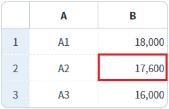
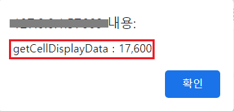
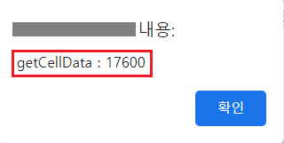

GridView의 'getCellDisplayData' 메소드와 DataList의 'getCellData' 메소드를 사용하여 GridView 셀의 데이터를 반환받는 예제입니다.
각 메소드의 기능은 다음과 같습니다.
[GridView] getCellDisplayData: GridView에 출력된 데이터를 반환합니다.
[DataList] getCellData: DataList에 할당된 데이터를 반환합니다.
GridView에 출력된 데이터 반환받기
GridView와 연결된 DataList의 데이터 반환받기
1
STEP 1: 초기 상태를 확인합니다.
GridView의 'B' 컬럼에는 숫자형 포맷이 적용되어, 3자리마다 ','가 표시되었습니다. 2번째 행의 'B' 열의 셀 데이터는 다음과 같습니다. - 화면에 표시된 데이터: 17,600 - DataList에 할당된 데이터: 17600
Image 1.브라우저(Chrome) 실행 예시

2
STEP 2: GridView에 출력된 'B' 컬럼의 2번째 행의 데이터를 반환받습니다.
'GridView에 출력된 데이터 반환받기' 버튼을 클릭합니다.3
STEP 3: 실행된 결과를 확인합니다.
결과값이 브라우저 alert으로 출력됩니다. 출력 값 : getCellDisplayData : 17,600
Image 2.브라우저(Chrome) 실행 예시

1
STEP 1: 초기 상태를 확인합니다.
GridView의 'B' 컬럼에는 숫자형 포맷이 적용되어, 3자리마다 ','가 표시되었습니다. 2번째 행의 'B' 열의 셀 데이터는 다음과 같습니다. - 화면에 표시된 데이터: 17,600 - DataList에 할당된 데이터: 17600
Image 3.브라우저(Chrome) 실행 예시
2
STEP 2: GridView와 연결된 DataList의 'B' 컬럼의 2번째 행의 데이터를 반환받습니다.
'GridView와 연결된 DataList의 데이터 반환받기' 버튼을 클릭합니다.3
STEP 3: 실행된 결과를 확인합니다.
결과값이 브라우저 alert으로 출력됩니다. 출력 값 : getCellData : 17600
Image 4.브라우저(Chrome) 실행 예시

GridView의 'getCellDisplayData' 메소드를 사용하여 스크립트를 작성합니다. 세부 설정은 아래의 스크립트 예시에 작성되어 있습니다.
Example 1.Script
//예제 파일에서는 스크립트 scwin.btn_exam1_1_onclick에 작성되어 있습니다. // GridView 'grd_exam'에 출력된 'B' 컬럼의 2번째 행의 데이터를 반환받습니다. var result = grd_exam.getCellDisplayData(1, "col_b");
DataList의 'getCellData' 메소드를 사용하여 스크립트를 작성합니다. 세부 설정은 아래의 스크립트 예시에 작성되어 있습니다.
Example 2.Script
//예제 파일에서는 스크립트 scwin.btn_exam1_2_onclick에 작성되어 있습니다. // 예시 1) GridView에 연결된 DataList의 Id를 알고 있는 경우 // var result = dlt_exam.getCellData(1, "col_b"); // 예시 2) GridView에 연결된 DataList를 알수 없는 경우 // GridView 'grd_exam'에 연결된 DataList 객체를 반환받습니다. var _dataList = $p.getComponentById(grd_exam.getDataList()); // GridView 'grd_exam'의 'B' 컬럼의 2번째 행의 데이터를 반환받습니다. var result = _dataList.getCellData(1, "col_b");
getCellDisplayData( rowIndex , colIndex )
[DataList] getCellData( rowIndex , colInfo )
getDataList( )